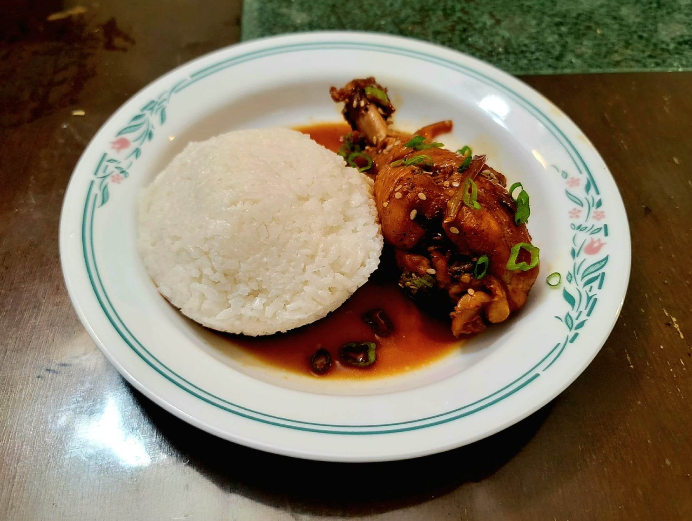

Moa Fa'asaina

Ingredients:
- 2 lb Chicken legs or thighs, bone-in, skin on
- Salt, to taste
- Black pepper, to taste
- 1-2 tbsp Oil
- 1 Onion, sliced
- 4 cloves Garlic, minced
- 1 tbsp Ginger, minced
- 1 cup Dark soy sauce
- 1/2 cup Coconut vinegar or Apple cider vinegar
- 4~ cups Water
- 2 tbsp Tapioca starch, whisked together with 2 tbsp Water into a slurry
- 2 Scallions, thinly sliced
- 1 tbsp Sesame seeds
Instructions:
- Season the chicken with salt and pepper to taste. Then heat the oil in a large pot over medium heat. Brown the chicken for 3-4 minutes per side. Then remove the chicken from the pan and reserve.
- Add the garlic, ginger, and onion to the pot and sauté until softened, about 7 minutes. Then back in the chicken along with the soy sauce, vinegar, and enough water to cover the chicken (roughly 4 cups). Let cook for about 20 minutes over medium heat or until the chicken is cooked through.
- Remove the chicken from the pot. Whisk the pot constantly while slowly pouring in the tapioca starch slurry. Once thickened to preference, lower the heat to low and add back in the chicken.
- Let the chicken come back to temperature and then remove from the heat. Stir in the scallions and sesame seeds.
- Serve hot with Alaisa Fa'apopo.